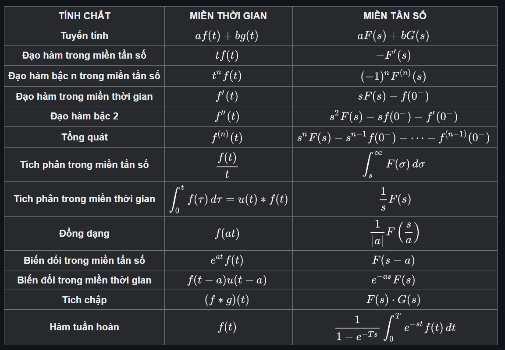

Phép biến đổi Laplace là cách tiếp cận miền tần số cho các tín hiệu thời gian liên tục bất kể tính ổn định của hệ thống. Phép biến đổi Laplace của hàm số f(t) (với mọi số thực t ≥ 0) là hàm số F(s), được định nghĩa như sau: $$ \mathcal{L}\{f(t)\}= F(s) = \int\limits_{0^-}^{\infty} f(t)e^{-st}dt $$ Trong đó: s là biến số phức cho bởi $ s = \sigma+j\omega $ với s là miền tần số, có đơn vị là phần giây (second) $ s^{-1} $ Giới hạn $ 0^- $chỉ rõ thời điểm bắt đầu ngay trước khi $ t = 0 $, được dùng để lấy gốc hàm số $ f(t) $ tại thời điểm $ t = 0 $.
Một khi nói "biến đổi Laplace" mà không chú ý thêm gì, thường là ta nói đến biến đổi một phía. Biến đổi Laplace có thể được định nghĩa là [[biến đổi Laplace hai phía]] bằng cách mở rộng giới hạn của tích phân đến [[Vô tận|vô cực]]. $$ F(s)=\mathcal{L}\left\{f(t)\right\}=\int_{-\infty}^\infty f(t)e^{-st}dt $$ Như vậy, biến đổi Laplace một phía đơn giản sẽ trở thành trường hợp đặc biệt của biến đổi Laplace hai phía, được xác định bằng cách lấy hàm đã chuyển đổi nhân với [[Hàm bước Heaviside|hàm bước nhảy Heaviside]].
[[Biến đổi Laplace ngược]] giúp chúng ta tìm lại hàm gốc f(t) từ hàm ảnh F(s). Biến đổi Laplace ngược được định nghĩa bởi tích phân sau. $$ \mathcal{L}^{-1} \left\{F(s)\right\}=f(t)=\frac{1}{2\pi i}\int_{\gamma -i \infty}^{\gamma +i \infty}e^{st}F(s)ds $$ Nhưng thông thường chúng ta ít dùng đến tích phân này để tính hàm gốc mà dùng bảng "các hàm gốc – hàm ảnh tương ứng" đã có sẵn để tìm lại hàm gốc f(t).
* Cho các hàm f(t) và g(t), và các hàm ảnh tương ứng F(s) và G(s): $$ f(t)=\mathcal{L}^{-1}\left\{F(s)\right\} $$ $$ g(t)=\mathcal{L}^{-1}\left\{G(s)\right\} $$ * Sau đây là bảng các tính chất của biến đổi Laplace: 